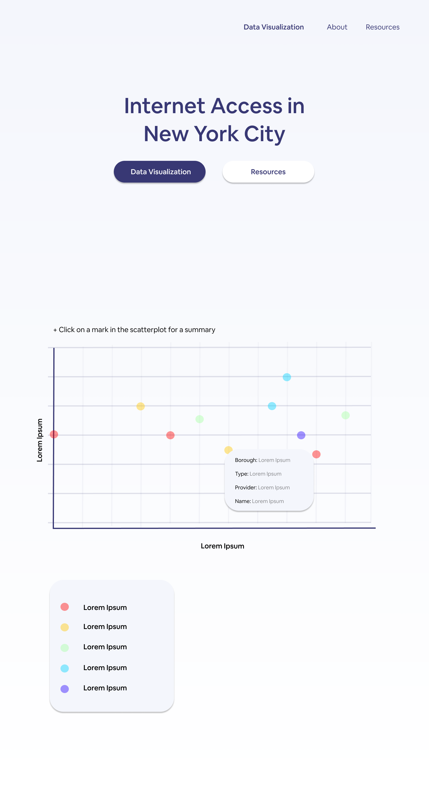
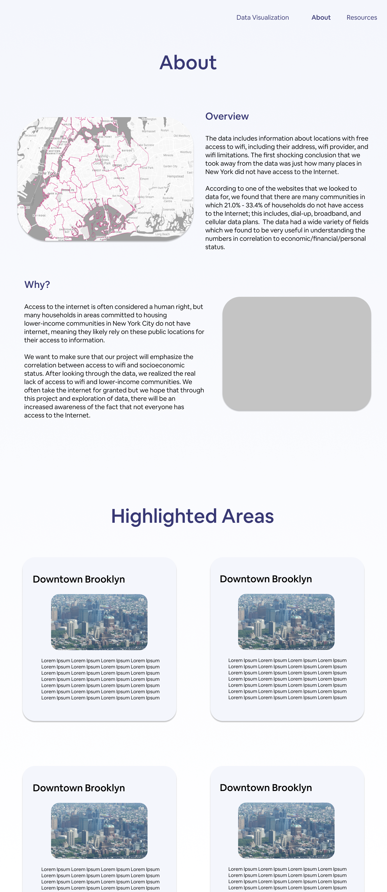

Internet Access
Role: Designed & created the website/Researched & wrote copy & resources
Timeline: October 2020
Tools: HTML, CSS, d3.js
01 Overview
Access to the internet is often considered a human right, but many households in areas
committed to housing lower-income communities in New York City do not have internet, meaning they likely rely
on these public locations for their access to information.
We wanted to make sure that our project emphasizes the correlation between access to wifi and socioeconomic
status. After looking through the data, we realized the real lack of access to wifi and lower-income
communities.
We often take the internet for granted but we hope that through this project and exploration of data, there
will be an increased awareness of the fact that not everyone has access to the Internet.
02 Analyzing the Data
The data includes information about locations with free access to wifi, including their
address, wifi provider, and wifi limitations. The first shocking conclusion that we took away from the data
was just how many places in New York did not have access to the Internet.
According to one of the websites that we looked to data for, we found that there are many communities in which
21.0% - 33.4% of households do not have access to the Internet; this includes, dial-up, broadband, and
cellular data plans.
The data had a wide variety of fields which we found to be very useful in understanding the numbers in
correlation to economic/financial/personal status, such as Economic conditions, Health/Mental Health
(Infant/Maternal Health, General, Asthma, Insurance, Nutrition, etc.), Early Care & Education, Youth/Juvenile
Justice, and Child Welfare/Community Service. The wide array of fields allows for a broader understanding of
who is not afforded the right to have Internet access in their households and possibly the reason that may be.


03 The Next Steps (Prototype)
We decided to create a data visualization using an Airtable API as well as the D3.js library. We hoped that this visualization will demonstrate a variety of trends that will provide a deeper understanding of why certain areas have lower number of Internet Access. We also decided to embed this visualization on a website as well as highlight some helpful resources on the subject matter.

